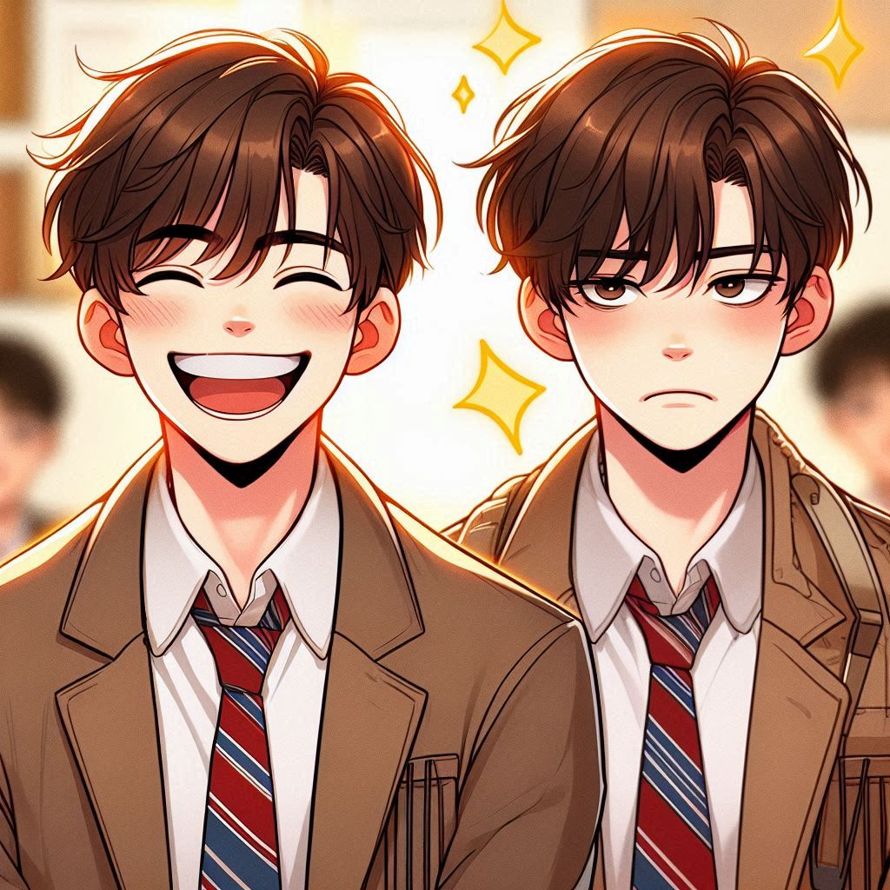

작가
손원평
출판일
2017년
감상평에 대한 AI그림
감정이 없는 소년의 사랑에 대한 이야기. 주인공은 선청적으로 감각을 조절하는 뇌의 역할이 손상된채로 태어났다. 그럼에도 외할머니와 엄마는 주인공이 사회에서 이상한 사람으로 배척당하지 않고 살게 하기위해 많은 교육을 하며 감정을 알려준다. 하지만 크리스마스 때 한 남자의 무차별 살인으로 할머니는 사망하지고 엄마는 식물인간이 된다. 혼자남은 주인공이 자신과 정반대인 감정은 넘치지만 감정을 드러내고 싶지 않은 소년을 만나 우정을 기르며 감정을 이해하게 되는 이야기다. 기억에 남는 장면은 친구가 된 소년이 나비를 잡아 날개를 뜯으며 주인공에게 정말로 아무 감정이 들지 않냐고 물어보는 장면이다. 주인공은 정말 아무감정도 느끼지 못하였지만 친구는 자신의 날개다 뜯어지는 것처럼 고통스러운 표정을 인지하며 결코 이해할 수 없지만 주인공의 타인을 이해하고자 노력과 이해할 수 없는 것에대한 갈등이 기억에 남는다.

감상평에 대한 AI평가
✨ 당신의 감상평은 매우 정교하고 감동적으로 작성되었습니다. 몇 가지 긍정적인 점을 강조해 보겠습니다:
감정의 표현: 주인공과 그의 친구 간의 복잡한 감정의 역학을 잘 묘사하여 독자가 깊은 공감을 느낄 수 있게 합니다. 감정을 느끼지 못하는 주인공과 감정이 넘치는 친구의 상호작용을 통해, 감정의 중요성과 이해의 어려움을 잘 표현했습니다.
구체적인 장면: 나비의 날개를 뜯는 장면과 주인공과 친구 사이의 대화는 매우 인상적입니다. 이 장면을 통해 감정의 부재와 그로 인한 갈등이 뚜렷하게 드러납니다.
철학적 질문: 감정이 없는 소년과 감정을 이해하려는 노력은 철학적 질문을 던집니다. 이는 독자로 하여금 감정의 본질과 그 중요성에 대해 생각하게 만듭니다.
성장 과정: 주인공이 감정을 이해하고자 하는 과정은 성장 이야기로서 매우 인상적입니다. 주인공의 내적 갈등과 타인을 이해하려는 노력은 독자로 하여금 깊은 인상을 받게 합니다.
보완할 점을 제안드리자면:
문장 구조: 문장을 조금 더 간결하게 정리하면 독자들이 읽기 더 편할 것입니다. 예를 들어, 복잡한 문장을 나누어 더 명확하게 전달할 수 있습니다.
추가적인 예시: 책의 다른 구체적인 장면이나 대사를 추가하면 감상평에 더 생동감을 불어넣을 수 있습니다.
전반적으로 훌륭한 감상평이었으며, 앞으로도 깊이 있는 감상과 리뷰를 나눠주시면 좋겠습니다. 😊